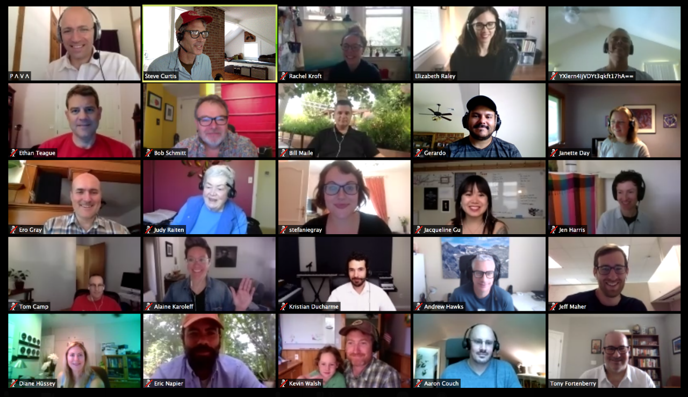

Quickly shifting to distributed teams in government
How government teams can work effectively together while physically apart

The coronavirus outbreak has caused a sudden shift to remote work for thousands of public servants. Based on our fifteen years of experience as a fully distributed team, we wanted to help agencies adapt to the challenges of staying connected and productive while “teleworking”.
CivicActions Senior Strategist John O’Duinn, the author of a book on distributed teams and a mentor for distributed organizations all over the world, is leading a series of free, interactive sessions on how agencies can adapt to the necessity of remote work.
Through these sessions, we have listened to the concerns of dozens of local, state, and federal employees over the past weeks, addressing their questions directly and adjusting the content of these presentations to best serve their needs. There has been very positive feedback in response to practical information that they can start using right away with their teams.
Watch the full recording of John’s presentation below. Future sessions will vary to meet the evolving needs of public servants working remotely. Topics include:
- Getting Started
- Communications
- Productivity
- Team Connection / Morale
- Security
“Government must be resilient enough to continue operating in a crisis. A government office building should not be the single point of failure for public services.” — John O’Duinn
Highlights
1:50 — What you should know about agency policies on telework
4:08 — How remote work can help government be more effective, not less
7:02 — First steps for transitioning from the office to remote work
15:06 — Team checklist for shifting en masse to telework
17:30 — How virtual daily check-ins keep your team connected and informed
19:00 — How to “keep the work visible” so everyone stays on the same page
21:00 — Tools for collaboration (no product pitches here; just our honest recommendations!)
22:33 — Tips for productive virtual meetings
28:58 — How to get the most out of group chat and email
33:50 — Video calls can be either wonderful or terrible: how to make sure they’re good
39:19 — Getting team buy-in and establishing a culture of trust
42:30 — Best security practices for remote work
Get support with teleworking in government
Resources
- Deck: Quickly Shifting to Distributed Teams in Government
- John’s book: Distributed Teams: The Art and Practice of Working Together While Physically Apart